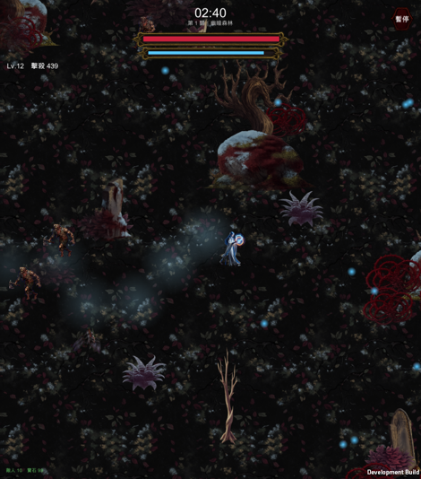
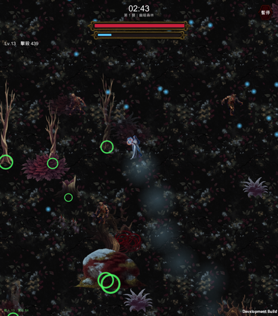
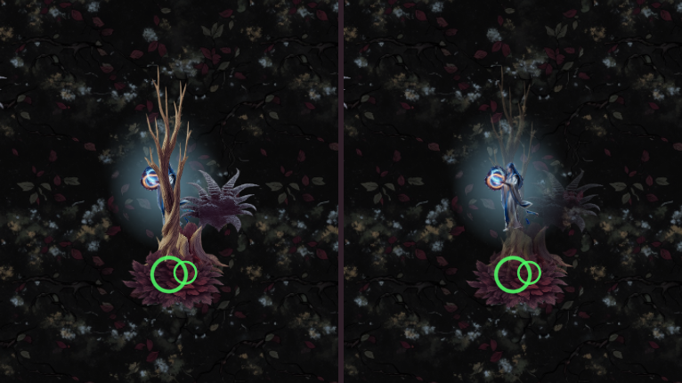
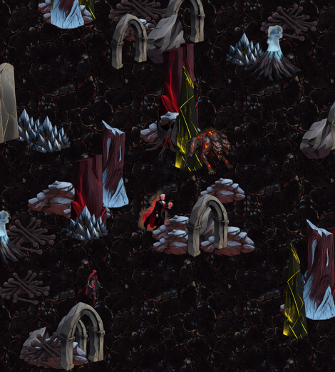
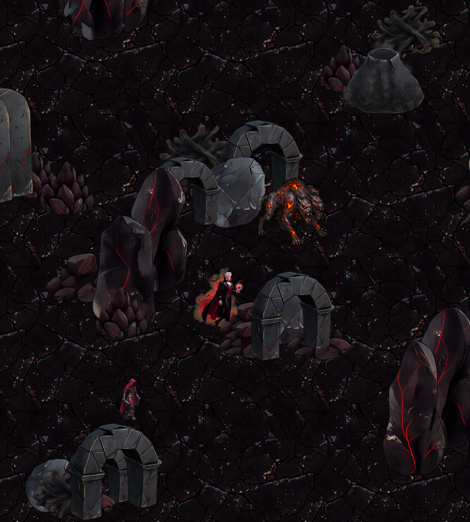
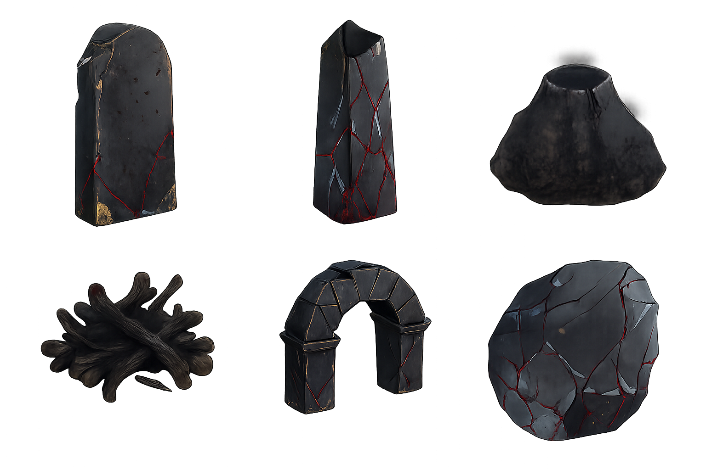
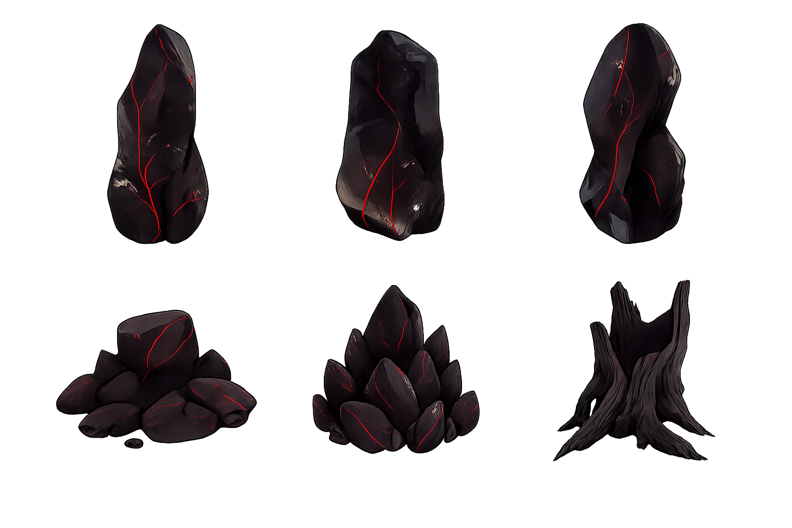

遊戲裡的樣子
已上線

森林關的素材、擺放程式、樹幹碰撞、遮擋 shader 都已經接上並用實機驗證過。血月荒原是下一關的試樣，等你確認再往下做。



| 項目 | 結果 | 怎麼判讀 |
|---|---|---|
| 畫面內裝飾物 | 274 件（99 件有碰撞） | 地被刻意不給碰撞，所以有碰撞的少於總數 |
| 正面撞樹幹 | 18 / 20 被擋下 | 沒被擋下的 2 次是「擦邊滑過去」，不是穿過樹 |
| 隨機直線穿越樹林 | 52 / 60 走得通 | 太低＝變成一道牆；100%＝碰撞根本沒作用 |
| 壓力測試 | 264 隻敵人 60.0 fps，最差幀 21.1 ms | 加了 274 個裝飾物與挖洞 shader 之後仍然滿幀 |
| 完整跑測 | 跑完全程通關、零例外 | 排序層大改之後沒有東西破掉 |
「隨機直線穿越」一開始只有 35 / 60。原因是兩棵樹之間可能夾出比人還窄的縫——推出 A 會被推進 B、推出 B 又被推回 A，玩家原地卡死。那不是「繞得過去」，是夾角陷阱。
修法是生成時檢查碰撞體之間的淨空（0.6 世界單位，玩家直徑才 0.47），不夠寬就不生那一棵。改完之後穿越率回到 52 / 60，而正面撞樹幹的攔阻率沒有掉。一叢少一棵樹沒人看得出來，卡死一次玩家就死了。




這一輪荒原共 5 張 Grok 生圖（含被退掉的 v1 兩張、地面重生成一張）＋ 4 次 OpenAI 去背，約 $1.0；場地素材累計約 $2.6。沒有遇到 Grok 額度不足。
荒原素材還在暫存路徑，沒有進 Assets/。森林關的已經進去並 commit 了。